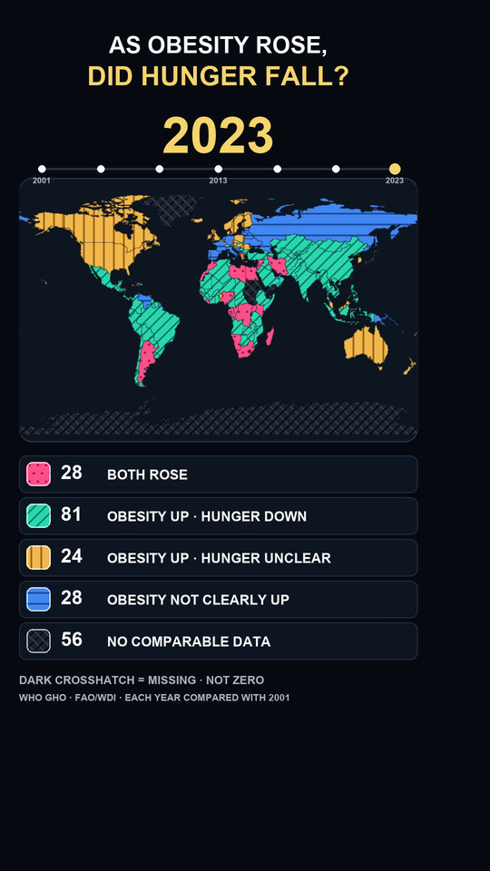

both rose
ambos aumentaram
EPISODE 03 • REFERENCE PAGE
EPISÓDIO 03 • PÁGINA DE REFERÊNCIA
A descriptive, interval-aware comparison of countries and areas against a 2001 baseline. The Short stays open; this page preserves the question, data and limits.
Uma comparação descritiva, com intervalos, entre países e áreas em relação a 2001. O Short fica aberto; esta página preserva a pergunta, os dados e os limites.
Question and answer status
Pergunta e estado da resposta
Among comparable national estimates, when adult obesity rose robustly versus 2001, how often did undernourishment robustly fall, rise or remain indeterminate, and how did this geography evolve through 2023?
Entre estimativas nacionais comparáveis, quando a obesidade adulta aumentou de forma robusta em relação a 2001, com que frequência a subalimentação caiu, aumentou ou ficou indeterminada, e como essa geografia evoluiu até 2023?
No. Among 133 comparable countries and areas with a robust obesity rise, undernourishment fell robustly in 81, rose robustly in 28 and was indeterminate in 24.
Não. Entre 133 países e áreas comparáveis com aumento robusto da obesidade, a subalimentação caiu em 81, aumentou em 28 e ficou indeterminada em 24.
Not causal and not the same people. Adult obesity and population undernourishment use different human denominators. The shared unit is country/area and time.
Não causal e não são as mesmas pessoas. Obesidade adulta e subalimentação da população usam denominadores humanos diferentes. A unidade comum é país/área e tempo.
Observed endpoint
Extremo observado

At the 2023 midpoint, 161 countries and areas were pair-comparable: 28 both rose; 81 had obesity rise while undernourishment fell; 24 had obesity rise while undernourishment remained indeterminate; and 28 had another observed outcome. Of the full 217-entity registry, 56 lacked a comparable pair for this midpoint. Twelve comparable entities remain counted but are outside the low-resolution map geometry.
No ponto médio de 2023, 161 países e áreas eram comparáveis em pares: em 28 ambos aumentaram; em 81 a obesidade aumentou enquanto a subalimentação caiu; em 24 a obesidade aumentou e a subalimentação ficou indeterminada; e 28 tiveram outro resultado observado. No registro completo de 217 entidades, 56 não tinham par comparável nesse ponto médio. Doze entidades comparáveis continuam contadas, mas ficam fora da geometria do mapa em baixa resolução.
Only M means missing. U and O are observed analytical states; neither means zero or improvement.
Somente M significa ausência de dados. U e O são estados analíticos observados; nenhum deles significa zero ou melhora.
both rose
ambos aumentaram
obesity up / undernourishment down
obesidade subiu / subalimentação caiu
obesity up / undernourishment indeterminate
obesidade subiu / subalimentação indeterminada
other observed outcome
outro resultado observado
comparable pair unavailable
par comparável indisponível
Definitions and sources
Definições e fontes
“Hunger” is hook shorthand. The measured construct is prevalence of undernourishment. Public geography is described as countries and areas; the registry is not a sovereignty classification.
“Fome” é simplificação do gancho. O construto medido é prevalência de subalimentação. A geografia pública é descrita como países e áreas; o registro não é classificação de soberania.
Coverage and time
Cobertura e tempo
217 entities × 23 midpoints = 4,991 rows
3,762 rows · 162–164 entities per midpoint
161 comparable · 56 missing · 12 off-map
2023 = 2022–2024; adjacent windows overlap two years
The animation is not cumulative. A country's color at each midpoint is recomputed against 2001. Overlapping undernourishment windows prohibit one-year shock claims.
A animação não é cumulativa. A cor de cada país em cada ponto médio é recalculada contra 2001. Janelas sobrepostas de subalimentação impedem afirmações de choque anual.
Intervals, censoring and states
Intervalos, censura e estados
The full endpoint-difference interval must be strictly above or below zero.
Todo o intervalo da diferença entre extremos deve ficar estritamente acima ou abaixo de zero.
Touching or crossing zero is not labeled “no change.”
Tocar ou cruzar zero não é rotulado como “sem mudança”.
2.5 is represented as [0, 2.5], never as an exact point.
The map uses all pair-comparable entities; the hypothesis uses R+F+U among robust obesity rises.
O mapa usa todas as entidades comparáveis; a hipótese usa R+F+U entre altas robustas de obesidade.
Sensitivity and heterogeneity
Sensibilidade e heterogeneidade
pF > pR > 0: supported in the frozen primary scenario.
pF > pR > 0: sustentada no cenário principal congelado.
Supported across all 13 registered sensitivity scenarios and independent reproduction.
Sustentada em todos os 13 cenários de sensibilidade registrados e na reprodução independente.
MENA, Afghanistan and Pakistan: 7 R vs 7 F among conditional N=14.
MENA, Afeganistão e Paquistão: 7 R contra 7 F em N condicional=14.
Population-weighted shares are descriptive ecological context only and never decide H1/H2.
Participações ponderadas por população são apenas contexto ecológico descritivo e nunca decidem H1/H2.
Limitations and not tested
Limitações e não testado
The design does not identify mechanisms, effects, blame or individual-level relationships.
O desenho não identifica mecanismos, efeitos, culpa ou relações individuais.
Adult obesity and population undernourishment do not describe the same people.
Obesidade adulta e subalimentação da população não descrevem as mesmas pessoas.
Exploratory values were inspected before source, quality, method and sensitivity rules were frozen.
Valores exploratórios foram vistos antes do congelamento das regras de fonte, qualidade, método e sensibilidade.
The answer covers 133 comparable countries and areas with robust obesity rise, not every country.
A resposta cobre 133 países e áreas comparáveis com alta robusta de obesidade, não todos os países.
Uncertainty controls the rise, fall and indeterminate labels; FAO 2.5 is treated as [0,2.5].
A incerteza controla os rótulos; o valor FAO 2,5 é tratado como [0,2,5].
Adjacent PoU frames share two years and cannot support an independent annual shock story.
Quadros PoU adjacentes compartilham dois anos e não sustentam narrativa de choque anual independente.
Early conditional denominators can be small; regional denominators differ; 12 comparable entities are off-map but retained.
Denominadores condicionais iniciais podem ser pequenos; denominadores regionais variam; 12 entidades comparáveis ficam fora do mapa, mas são mantidas.
Causal mechanisms, individual pairing, prediction, external-source replication and stability under future source revisions were not tested.
Mecanismos causais, pareamento individual, previsão, replicação por fontes externas e estabilidade diante de futuras revisões não foram testados.
Sources, files and versions
Fontes, arquivos e versões
Version record
Registro de versão
Built from frozen WHO GHO and FAO/WDI snapshots, the V-005 analysis and the V-006 answer contract. The approved Short contains no QR; this canonical page is linked from the YouTube description.
Construída a partir dos snapshots congelados WHO GHO e FAO/WDI, da análise V-005 e do contrato V-006. O Short aprovado não contém QR; esta página canônica será vinculada na descrição do YouTube.
A material correction creates a new version, hashes and owner gate. Nothing is silently replaced.
Uma correção material cria nova versão, hashes e gate do proprietário. Nada é substituído silenciosamente.